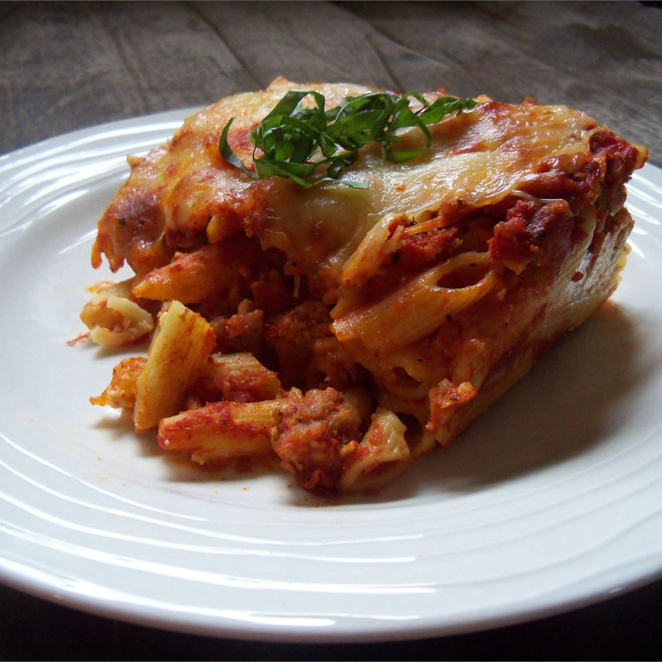

Baked Ziti

Description
Baked ziti is an Italian meat, cheese and noodle dish. This recipe is easy to make. Feel free to modify to taste or preference!
Ingredients
- 1 pound ziti
- 1.5 tablespoons olive oil
- 1 onion
- 1 teaspoon rosemary
- 4 garlic cloves
- 1 pound ground beef
- 1 jar spaghetti sauce
- 6 ounces provolone
- 6 ounces mozzarella
- Salt (to taste)
- .75 cups sour cream
- .75 cups cottage cheese
- 2 tablespoons grated Parmesan cheese
Steps
- Bring a large pot of water to a boil, add ziti, boil for 8-10 minutes
- Heat olive oil in a large skillet. Cook onion in oil, add rosemary and garlic. Transfer to a bowl
Preheat oven to 350 degrees F
- Brown ground beef in skillet. Add onion mixture from bowl and spaghetti sauce. Reduce heat and simmer for 10 minutes.
- Grease a 9"x13" baking pan. Layer 1/2 of pasta, then provolone, sour cream, cottage cheese, and just under 1/2 of the meat mixture.
- Layer the rest of the pasta, then mozzerella cheese, the remaining meat mixture, and parmesan.
- Bake for 20-30 minutes.